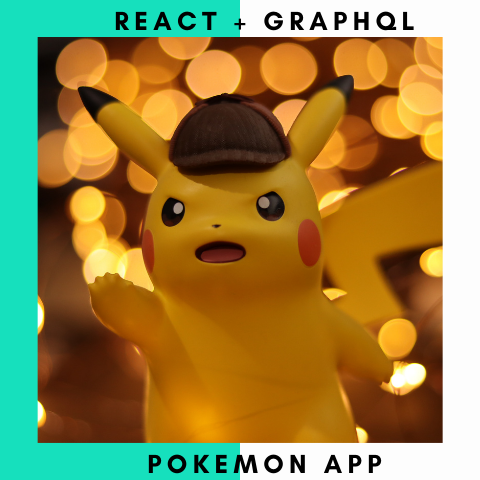

Pokemon App
This Pokemon app retrieves data from the Pokemon API using GraphQL and displays them in a two column grid. For this simple app, I chose to retrieve and render the first 8 Pokemon, but we can choose which Pokemon by passing along some parameters such as name, id, or even based on minimum HP. The ability to pick and choose what data you would like to fetch rather than the entire database is one of the core features of GraphQL. I enjoyed working with it and look forward to using it again.